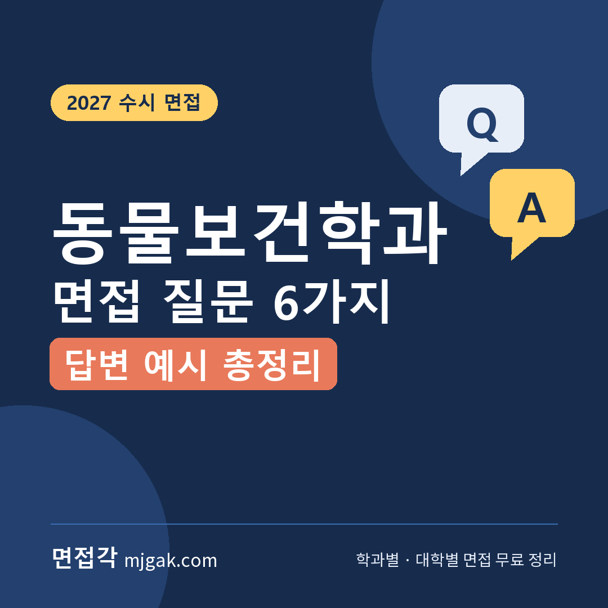
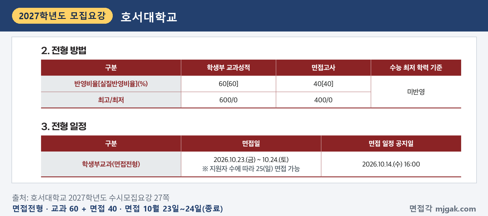
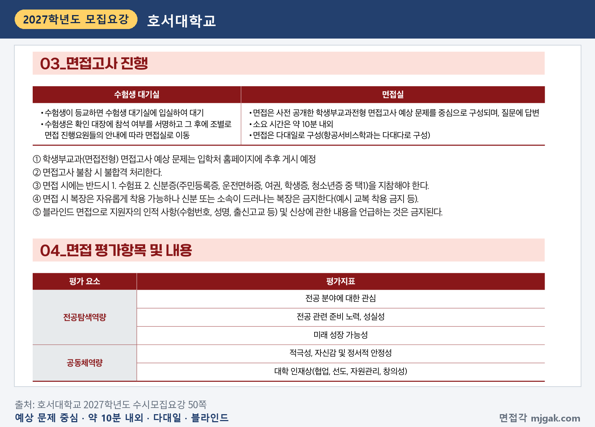
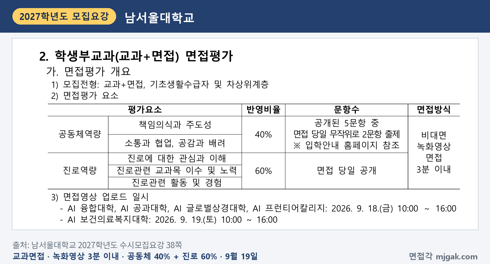
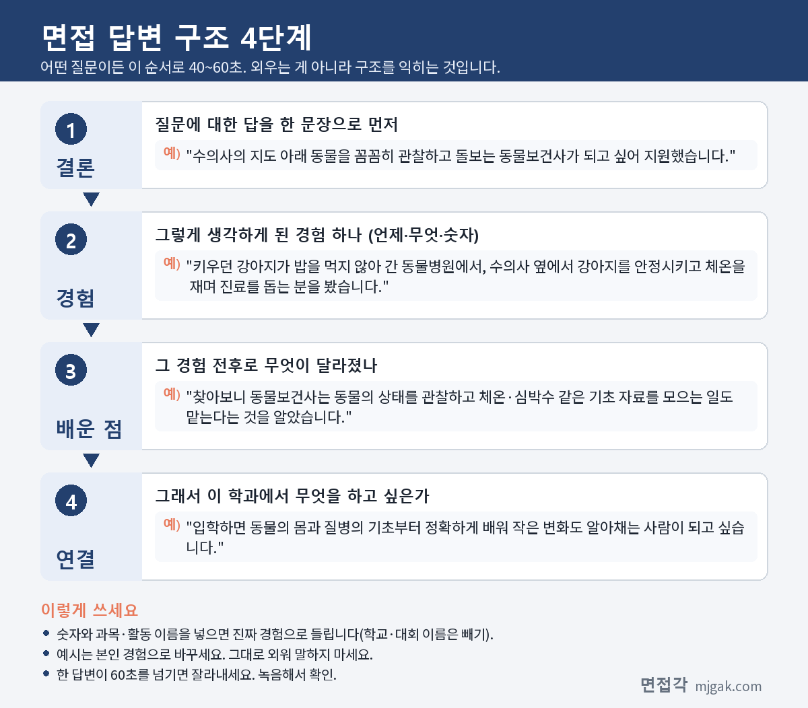

Ctrl+V (서식 유지됨)제목
본문 (이 영역 전체가 복사됩니다)
📷 여기에 이미지 넣기 — 썸네일 — thumb-animalhealth.png (대표 이미지로 지정)
동물보건학과 면접에서 직업 설명의 출발점은 수의사법입니다. 수의사법은 동물보건사를 '동물병원 내에서 수의사의 지도 아래 동물의 간호 또는 진료 보조 업무에 종사하는 사람으로서 농림축산식품부장관의 자격인정을 받은 사람'으로 정합니다(제2조). 시행규칙은 그 범위를 동물에 대한 관찰, 체온·심박수 등 기초 검진 자료의 수집, 간호판단 및 요양을 위한 간호, 그리고 약물 도포·경구 투여·마취와 수술의 보조 같은 진료 보조로 적었습니다(제14조의7). '동물을 좋아해서'에 이 정의를 붙여 말하면 답이 구체적이 됩니다. 이 글은 호서대·남서울대·청주대가 2027학년도 수시에서 동물보건 계열 면접을 어떻게 봤는지(세 곳 모두 2026년 10월까지 끝남) 기록하고, 2028학년도에 지원할 학생을 위해 질문 6가지와 답변 예시, 답변 4단계, 시기별 준비 순서, 자주 묻는 것들을 정리했습니다.
1. 동물보건학과 면접, 2027학년도에는 어떻게 봤나
2027학년도 수시모집요강에서 동물보건 계열 모집단위(동물보건복지학과·반려동물보건학과)의 면접을 확인한 대학은 세 곳입니다. 세 곳 모두 학생부교과 성적에 면접(30~40%)을 더해 한 번에 합산했습니다. 남서울대는 녹화영상을 올리는 비대면 면접, 호서대는 다대일 면접이었고, 청주대는 요강에 면접 형태를 적지 않았습니다.
호서대학교 학생부교과 면접전형 동물보건복지학과(바이오헬스대학)는 20명을 뽑았습니다(22쪽). 교과 60%(600점)에 면접 40%(400점)이고, 수능 최저 학력 기준은 반영하지 않았습니다. 면접 일정 공지는 10월 14일(수) 16:00, 면접은 10월 23일(금)~24일(토)였고 지원자 수에 따라 25일(일)까지 가능하다고 적혀 있었습니다(27쪽).
📷 여기에 이미지 넣기 — 캡처 1 — 호서대학교 2027학년도 수시모집요강 27쪽: hoseo-2027-animalhealth-method.png
호서대 면접은 사전 공개한 학생부교과전형 면접고사 예상 문제를 중심으로 구성되고, 소요 시간은 약 10분 내외, 다대일 방식입니다. 예상 문제는 입학처 홈페이지에 게시한다고 적혀 있고, 면접에 불참하면 불합격입니다. 평가 요소는 전공탐색역량(전공 분야에 대한 관심, 전공 관련 준비 노력·성실성, 미래 성장 가능성)과 공동체역량(적극성, 자신감 및 정서적 안정성, 대학 인재상(협업·선도·자원관리·창의성))입니다(50쪽).
📷 여기에 이미지 넣기 — 캡처 2 — 호서대학교 2027학년도 수시모집요강 50쪽: hoseo-2027-animalhealth-interview.png
남서울대학교 학생부교과 교과면접(교과+면접)전형 반려동물보건학과는 2027학년도 신설학과(AI 보건의료복지대학)로 6명을 뽑았습니다(5·27쪽). 교과 60%에 면접 40%이고 수능 최저는 없습니다(27쪽). 면접은 3분 이내의 비대면 녹화영상 면접입니다. 공동체역량 40%(책임의식과 주도성, 소통과 협업, 공감과 배려)는 공개된 5문항 중 당일 무작위로 2문항이 나오고, 진로역량 60%(진로에 대한 관심과 이해, 진로관련 교과목 이수 및 노력, 진로관련 활동 및 경험) 문항은 당일 공개됩니다. 보건의료복지대학 영상 업로드는 9월 19일(토) 10:00~16:00이었습니다(7·38쪽). 이름·수험번호·고교명·교복 표찰·부모님의 신분 등이 화면이나 음성으로 드러나면 면접점수가 0점 처리됩니다(38쪽).
📷 여기에 이미지 넣기 — 캡처 3 — 남서울대학교 2027학년도 수시모집요강 38쪽: namseoul-2027-animalhealth-video.png
청주대학교 교과면접전형 동물보건복지학과(보건의료과학대학)는 7명이었습니다(5쪽). 교과 70%에 면접 30%이고 수능 최저는 없습니다. 면접 30%(최고 300점, 최저 60점)는 대학교육 이념과의 적합성, 모집단위와의 적합성(전공 적성 및 비전), 학생의 특성 및 학업성(이해력·분석력·사고력·창의력·표현력, 인성·가치관·학습동기 등) 세 영역으로 평가합니다(18쪽). 보건의료과학대학 면접은 10월 17일(토)~18일(일)이었고, 개인별 시간과 장소는 10월 2일(금) 홈페이지에 게시됐으며, 면접에 응시하지 않으면 불합격입니다(19쪽).
세 대학을 나란히 놓으면 방향이 보입니다. 호서대는 예상 문제를, 남서울대는 공동체역량 문항 5개를 미리 공개하는 방식이어서(50·38쪽), 공개된 문항에 내 경험을 붙인 답을 준비할 수 있었습니다. 청주대는 대학교육 이념과의 적합성처럼 대학의 건학정신을 묻는 항목이 따로 있습니다(18쪽). 세 곳 모두 해당 전형에 수능 최저가 없었습니다. 참고로 광주여대 반려동물보건학과는 요강에 동물보건사 양성기관 평가인증학과(2024. 12. 17.~2027. 12. 16.)로 표시돼 있지만, 2027학년도 수시는 일반학생전형Ⅱ(학생부 100%)로만 30명을 뽑아 면접이 없었습니다(광주여대 요강 PDF 3·6쪽, 쪽번호 인쇄 없음). 2028학년도 전형 방법과 날짜는 새 요강에서 반드시 다시 확인하세요.
2. 동물보건학과 면접 질문 6가지와 답변 예시
예시 답변은 답변 구조를 보여 주기 위한 가상의 예시입니다. 그대로 외우지 말고 본인 경험으로 바꿔 쓰세요. 공통 원칙은 하나입니다. "진단과 처방은 수의사의 몫이라는 경계를 지키면서, 수의사의 지도 아래 동물을 꼼꼼히 관찰하고 보호자와 차분히 소통하는 사람으로 말한다."
▶ 질문 1. 동물보건사가 되고 싶은 이유는 무엇인가요? 동물보건사는 어떤 일을 하나요?
왜 묻나: 지원 계기와 동물보건사라는 직업을 얼마나 찾아봤는지 함께 묻습니다. 호서대는 면접 전공탐색역량에 '전공 분야에 대한 관심'을, 남서울대는 진로역량에 '진로에 대한 관심과 이해'를 두었습니다.
답변 구조: 계기가 된 구체적 경험 → 찾아보고 알게 된 동물보건사의 업무(법에 적힌 범위) → 가장 관심 있는 분야 → 입학 후 배우고 싶은 것.
답변 예시:
"키우던 강아지가 밥을 먹지 않아 동물병원에 갔을 때, 수의사 선생님 옆에서 강아지를 안정시키고 체온을 재며 진료를 돕는 분을 보고 그 일이 궁금해졌습니다. 찾아보니 동물보건사는 동물병원 안에서 수의사의 지도 아래 동물의 간호와 진료 보조를 맡고, 동물의 상태를 관찰하고 체온·심박수 같은 기초 자료를 모으는 일도 한다는 것을 알게 됐습니다. 저는 그중 동물의 작은 변화를 알아채는 관찰에 가장 관심이 있고, 입학하면 동물의 몸과 질병의 기초부터 정확하게 배우고 싶습니다."
주의: '동물을 좋아해서'만으로는 무슨 일을 하는 직업인지 빠집니다. 법에 적힌 업무를 넣고, 확인하지 않은 업무는 말하지 마세요.
▶ 질문 2. 동물보건사와 수의사의 역할은 어떻게 다르다고 생각하나요?
왜 묻나: 두 직업의 업무 경계를 알고 있는지 묻는 질문입니다. 남서울대의 진로역량(진로에 대한 관심과 이해), 청주대의 '모집단위와의 적합성(전공 적성 및 비전)'과 이어집니다.
답변 구조: 법에 적힌 수의사의 직무 → 법에 적힌 동물보건사의 업무(수의사의 지도 아래, 동물병원 내) → 그래서 동물보건사가 지켜야 할 경계.
답변 예시:
"수의사법은 수의사의 직무를 동물의 진료와 보건 등으로 정하고, 동물보건사는 동물병원 안에서 수의사의 지도 아래 간호나 진료 보조를 한다고 정하고 있습니다. 시행규칙에는 약물 도포나 경구 투여, 마취와 수술의 보조도 수의사의 지도 아래 하는 진료 보조로 적혀 있었습니다. 그래서 동물의 상태를 판단해 치료를 정하는 것은 수의사의 몫이고, 동물보건사는 관찰한 내용을 정확히 전하고 지시받은 일을 꼼꼼히 해내는 것이 책임이라고 생각합니다."
주의: 동물보건사가 진단하거나 처방한다고 말하면 법과 맞지 않습니다. 수의사의 지도 아래라는 조건을 꼭 넣으세요.
📷 여기에 이미지 넣기 — 이미지 1 — 제미나이 생성: 동물병원 처치실 느낌의 실습실에서 순한 강아지·청진기·붕대 옆에서 답하는 남학생(실사) / "제미나이 프롬프트 1"
(AI로 만든 이미지로, 실제와 다를 수 있습니다)
▶ 질문 3. 진료를 기다리던 보호자가 불안해하며 '우리 아이 괜찮은 거죠?'라고 묻는다면 어떻게 하겠습니까?
왜 묻나: 보호자와 소통하는 태도와 업무의 경계를 함께 묻는 상황 질문입니다. 남서울대는 면접 공동체역량에 '소통과 협업', '공감과 배려'를, 청주대는 '인성, 가치관'을 평가 내용에 적었습니다.
답변 구조: 보호자의 불안을 먼저 받아 준다 → 진단처럼 들리는 말은 하지 않는다 → 지금 진행 상황과 수의사의 설명을 들을 수 있는 때를 안내한다 → 필요한 것을 묻고 전달한다.
답변 예시:
"먼저 많이 걱정되셨겠다고 말씀드리고, 보호자분의 이야기를 듣겠습니다. 다만 아이의 상태를 판단하는 것은 수의사 선생님의 일이라 제가 괜찮다거나 위험하다고 말씀드리지는 않겠습니다. 대신 지금 어떤 검사를 하고 있는지, 언제쯤 수의사 선생님께 설명을 들으실 수 있는지 안내해 드리고, 보호자분이 꼭 묻고 싶은 내용이 있으면 메모해 두었다가 수의사 선생님께 전하겠습니다."
주의: 안심시키려고 '괜찮을 거예요'라고 단정하면 업무의 경계를 넘습니다. 공감 → 경계 지키기 → 안내 → 전달 순서를 지키세요.
▶ 질문 4. 고등학교에서 이 학과와 관련해 공부하거나 활동한 것이 있나요?
왜 묻나: 고등학교에서 어떻게 준비해 왔는지 묻습니다. 남서울대는 진로역량에 '진로관련 교과목 이수 및 노력', '진로관련 활동 및 경험'을, 호서대는 '전공 관련 준비 노력, 성실성'을 적었습니다.
답변 구조: 과목이나 활동 이름 → 배운 개념이나 한 일(정확히 아는 만큼) → 그것을 동물과 연결해 더 찾아본 것 → 학과 공부와의 연결.
답변 예시:
"생명과학 시간에 우리 몸이 체온을 일정하게 유지하는 항상성을 배웠습니다. 그 개념이 동물에게는 어떻게 적용되는지 궁금해서 찾아보다가, 동물마다 정상 체온의 범위가 다르다는 것을 알게 됐고 이를 정리해 수업 시간에 발표했습니다. 이 과정에서 동물을 돌보려면 마음뿐 아니라 몸의 원리를 정확히 알아야 한다는 것을 느꼈고, 입학하면 동물의 해부와 생리를 제대로 배우고 싶습니다."
주의: 수업에서 배운 범위와 직접 찾아본 내용까지만 말하세요. 한림대 2027학년도 요강(91·92쪽)처럼 교외 수상, 자격증, 특정 기관명 언급에 감점 등 불이익을 둔 대학이 있으니 교내 수업과 활동 안에서 고르세요.
▶ 질문 5. 맡은 일을 꾸준히 책임지고 해낸 경험이 있나요?
왜 묻나: 성실성과 책임감을 묻는 경험 질문입니다. 남서울대의 공동체역량(책임의식과 주도성), 호서대의 '전공 관련 준비 노력, 성실성'과 이어집니다.
답변 구조: 맡은 일과 기간 → 어려웠던 점 → 내가 바꾼 방법 → 결과 → 배운 점.
답변 예시:
"한 학기 동안 과학실 어항의 물고기 먹이 주기와 수온 확인 당번을 맡았습니다. 처음에는 바쁜 날 깜빡해서 다른 친구가 대신 챙긴 적이 있었는데, 그 뒤로는 확인한 날짜와 수온을 표에 적어 어항 옆에 붙이고, 시험 기간에는 다른 당번 친구와 요일을 나눴습니다. 학기 끝까지 한 번도 거르지 않았고, 기록을 남기니 물이 탁해지는 시기도 미리 알 수 있었습니다. 생명을 돌보는 일은 꾸준한 기록과 확인이 중요하다는 것을 배웠습니다."
주의: '책임감이 강합니다'라는 말보다 기간과 행동이 드러나게 말하세요. 학교 밖 개인 봉사활동은 대입에 반영하지 않거나 언급하면 불이익을 주는 대학이 있어(예: 한림대 2027학년도 요강 92쪽) 교내 활동을 고르는 편이 낫습니다.
▶ 질문 6. 동물보건사가 되려면 어떤 과정을 거치나요? 졸업 후 어떤 동물보건사가 되고 싶나요?
왜 묻나: 자격을 얻는 과정과 졸업 뒤 계획을 알고 지원했는지 묻습니다. 호서대의 '미래 성장 가능성', 청주대의 '전공 적성 및 비전'과 이어집니다.
답변 구조: 자격 과정(평가인증을 받은 학교의 동물 간호 관련 학과 졸업 → 자격시험 합격 → 자격인정) → 하고 싶은 일 → 장기 목표.
답변 예시:
"수의사법에 따라 평가인증을 받은 학교의 동물 간호 관련 학과를 졸업하고, 동물보건사 자격시험에 합격한 뒤 자격인정을 받아야 동물보건사가 될 수 있다고 알고 있습니다. 그래서 지원하기 전에 학과가 평가인증을 받았는지도 확인했습니다. 졸업 후에는 동물병원에서 동물의 상태 변화를 가장 먼저 알아채는 동물보건사가 되고 싶고, 장기적으로는 수술 전후 간호처럼 꼼꼼함이 필요한 분야를 더 깊이 공부하고 싶습니다."
주의: 졸업만으로 동물보건사가 되지는 않습니다. 평가인증, 자격시험, 자격인정 단계를 정확히 말하고, 확인하지 않은 취업률이나 전망은 근거로 들지 마세요.
3. 답변은 이 4단계로 만드세요
어떤 질문이든 결론 → 경험 → 배운 점 → 연결, 이 순서로 40~60초 안에 말하면 됩니다. 남서울대처럼 3분 안에 여러 문항을 녹화하는 면접이라면 문항마다 쓸 시간을 미리 나눠 두세요. 아래 도식은 질문 1을 네 단계로 쪼갠 것입니다.
📷 여기에 이미지 넣기 — 도식 — structure-animalhealth.png
4. 2028학년도 동물보건학과 면접 준비 순서
고2 겨울방학: 수의사법의 동물보건사 정의(제2조)와 업무 범위(시행규칙 제14조의7), 평가인증 → 자격시험 → 자격인정 과정을 한 장으로 정리하고, 질문 1·2·6 초안을 씁니다.
고3 1학기: 생명과학 등 관련 과목에서 배운 개념과 교내 활동을 '한 일 → 더 찾아본 것 → 배운 점'으로 적어 둡니다. 지원하려는 학과가 동물보건사 양성기관 평가인증을 받았는지도 학과·입학처 안내로 확인합니다.
2028학년도 수시모집요강이 나오면: 동물보건 계열 모집단위의 전형마다 면접이 있는지, 대면인지 녹화영상인지, 면접 시간·비중·평가 항목·날짜, 복장·블라인드 규정을 표로 정리합니다. 2027학년도 호서대(예상 문제)·남서울대(공동체역량 5문항)처럼 문항을 미리 공개하는 대학은 공개 시기를 함께 적어 둡니다.
면접 2주 전부터는 다음 순서로 준비합니다.
1~2일차: 공개된 예상 문제나 문항이 있으면 문항마다 답의 뼈대를 적습니다.
3~4일차: 지원 동기(질문 1)와 자격 과정·진로(질문 6)를 내 경험으로 다듬어 40~60초로 맞춥니다.
5~6일차: 수의사와의 차이(질문 2)를 준비합니다. 수의사법 제2조의 정의와 시행규칙 제14조의7의 업무 범위를 정확히 외웁니다.
7~8일차: 질문 4·5에 쓸 과목 개념과 교내 활동을 골라 소리 내어 설명해 봅니다.
9~10일차: 상황 질문(질문 3)을 다른 장면으로 바꿔 연습합니다. 진료비를 묻는 보호자, 겁먹은 동물을 진정시켜야 하는 경우, 동료가 기록을 빠뜨린 경우처럼요.
11~12일차: 실제 면접 시간에 맞춰 모의 면접을 합니다. 녹화영상 면접이면 직접 찍어 보며 이름·학교 이름이 화면이나 소리로 드러나지 않는지 확인합니다.
전날: 답을 새로 고치지 말고 준비한 답을 소리 내어 한 번씩만 말해 봅니다. 수험표·신분증과 요강의 블라인드·복장 규정을 확인하고 일찍 쉽니다.
5. 2027학년도 동물보건학과 면접은 언제 봤나
아래는 2026년에 이미 끝난 일정을 날짜순으로 적은 것입니다.
- 9월 19일(토) 10:00~16:00: 남서울대 교과면접 보건의료복지대학 녹화영상 업로드(7·38쪽)
- 10월 2일(금): 청주대 교과면접전형 개인별 고사실 홈페이지 게시 예정으로 안내(19쪽)
- 10월 14일(수) 16:00: 호서대 면접전형 면접 일정 공지(27쪽)
- 10월 17일(토)~18일(일): 청주대 교과면접전형 보건의료과학대학 면접(19쪽)
- 10월 23일(금)~24일(토), 지원자 수에 따라 25일(일)까지: 호서대 면접전형 면접(27쪽)
2027학년도에는 남서울대 영상 업로드가 9월이었고, 호서대·청주대 면접도 수능(11월 19일) 전인 10월이었습니다. 2028학년도에 같은 시기라면 원서를 내기 전에 녹화 연습까지 마쳐 두세요. 날짜는 2028학년도 요강이 나오면 다시 맞춰 보세요.
6. 동물보건학과 면접 자주 묻는 것들
Q. 동물보건학과를 졸업하면 바로 동물보건사가 되나요?
A. 아닙니다. 수의사법 제16조의2에 따라 농림축산식품부장관의 평가인증을 받은 전문대학 또는 같은 수준 이상 학교의 동물 간호 관련 학과를 졸업(자격시험 응시일부터 6개월 이내 졸업 예정 포함)하는 등의 요건을 갖춘 뒤, 동물보건사 자격시험에 합격하고 농림축산식품부장관의 자격인정을 받아야 합니다.
Q. 어느 학과를 나와도 동물보건사 시험을 볼 수 있나요?
A. 대학 졸업으로 응시하려면 법은 '평가인증을 받은' 학교의 동물 간호 관련 학과 졸업을 요건으로 둡니다(수의사법 제16조의2·제16조의4). 학과 이름만으로 정해지지 않으니 지원 학과가 동물보건사 양성기관 평가인증을 받았는지 학과·입학처에 확인하세요.
Q. 동물보건사 자격시험은 어떻게 보나요?
A. 수의사법 시행규칙 제14조의4에 따라 기초 동물보건학, 예방 동물보건학, 임상 동물보건학, 동물 보건·윤리 및 복지 관련 법규 4과목을 필기시험으로 보고, 과목마다 40점 이상이면서 전 과목 평균 60점 이상이면 합격입니다. 시험은 매년 농림축산식품부장관이 시행합니다(법 제16조의3).
Q. 수능 최저가 있나요?
A. 2027학년도 호서대 면접전형, 남서울대 교과면접전형, 청주대 교과면접전형은 수능 최저가 없었습니다(27·27·18쪽). 2028학년도에는 지원 전형마다 요강으로 다시 확인하세요.
Q. 면접 복장 규정이 있나요?
A. 호서대 모집요강은 "면접 시 복장은 자유롭게 착용 가능하나 신분 또는 소속이 드러나는 복장은 금지한다(예시 교복 착용 금지 등)"라고 적고, 인적 사항과 신상에 관한 내용 언급도 금지합니다(50쪽). 남서울대는 녹화영상에 이름·수험번호·고교명·교복 표찰·부모님의 신분 등이 화면이나 음성으로 드러나면 면접점수를 0점 처리하고, 평가 가이드에 "단정한 복장과 용모를 갖추었는가?"를 적었습니다(38쪽). 청주대 모집요강의 교과면접전형 안내에는 복장 규정이 없습니다(18·19쪽).
7. 면접 전날 체크리스트
□ 지원 동기를 "경험 → 동물보건사의 법적 업무 → 관심 분야"로 60초 안에 말할 수 있다
□ 수의사와 동물보건사의 역할 차이(수의사의 지도 아래, 동물병원 내)를 법에 적힌 대로 말할 수 있다
□ 평가인증 → 자격시험 → 자격인정까지의 과정을 말하고, 지원 학과의 평가인증 여부를 확인했다
□ 불안한 보호자 상황에 "공감 → 경계 지키기 → 안내 → 전달" 순서로 답할 수 있다
□ 관련 과목·교내 활동을 '한 일 → 더 찾아본 것 → 배운 점'으로 설명할 수 있다
□ 이름·수험번호·고교명이 답변이나 녹화영상에 드러나지 않는다
□ 지원 대학 면접 형식(대면·녹화영상, 시간, 비중, 평가 항목)과 날짜, 블라인드·복장 규정을 확인하고 수험표·신분증을 챙겼다
8. 함께 보면 좋은 글
동물보건학과 면접은 동물을 아끼는 마음을 말하는 데서 그치지 않고, 수의사의 지도 아래 동물의 작은 변화를 기록하고 보호자의 걱정을 정확히 전하는 사람인지를 내 경험으로 설명하는 자리입니다.
※ 이 글의 모집요강 내용은 호서대학교, 남서울대학교, 청주대학교 2027학년도 수시모집요강에서 인용했습니다. 괄호 안 쪽수는 각 모집요강에 인쇄된 쪽수이고, 광주여대 참고 문장만 PDF 쪽수입니다. 질문 6가지는 평가 항목을 바탕으로 정리한 예상 질문이며 대학이 공개한 질문이 아닙니다. 2028학년도 면접 방식과 일정은 바뀔 수 있으니 지원 대학 입학처 공지로 확인하세요.
면접각은 동물보건학과를 포함한 학과별 면접 질문·답변 예시와 대학별 2027학년도 면접 정보, 대학이 공개한 면접 기출을 무료로 모아 둔 사이트입니다. 가입 없이 볼 수 있고, 무작위로 뽑은 질문에 60초 타이머로 답해 보는 모의 면접도 있습니다.
태그 (#은 에디터가 자동으로 붙이므로 그대로 붙여 넣어도 됩니다)
넣을 이미지 목록 (docs/promo/img 폴더)





제미나이 프롬프트 1 — 동물병원 처치실 느낌의 실습실에서 순한 강아지·청진기·붕대 옆에서 답하는 남학생(실사) (4:3) — 제미나이에 그대로 붙여 넣어 이미지를 만드세요